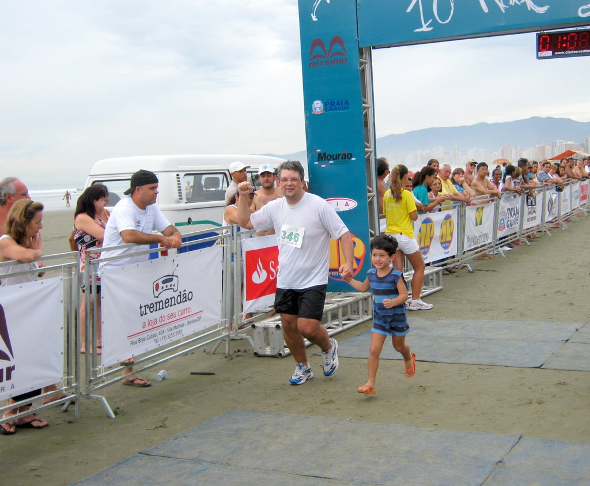

vamo, vamo, vamo…
Eu e o Henrique: muita emoção!

Eu e o Henrique
Eu não brinquei quando disse que abriria meu descanso com uma corrida de 10km. Eu cheguei na praia no sábado às 23:30 horas. Pilhado porque tinha passado as 24 horas anteriores correndo para deixar tudo no esquema para a minha merecida semana de descanso. Só consegui dormir as 03:00 horas e as 06:00 levantei e fomos de Itanhaém para Praia Grande. Mari, Henrique, com sono e eu. Já está virando rotina. Segunda largada de corrida e eu no banheiro químico, mas desta vez só número 1, sem complicação. Pouca gente na corrida e percurso na areia da praia, muito bom. Foi menos fácil do que esperava. As poucas horas de sono, cansaço acumulado e a maresia (estranhei bastante a roupa colada e me sufocando embora tivesse bem mais fácil manter a respiração), todos esses fatores somados, fez com que eu ficasse visualizando o Henrique me esperando de sorriso e braços abertos, para poder me manter no meu rítmo.
Correr naquela areia batida é muito bom, mas os riozinhos para serem pulados e a mesmice da paisagem só foram superados pela festividade do evento. Durante o restante da semana eu não consegui correr nenhum dia na praia por mais de 2km.
Mas na chegada o Henrique me aguardava e cruzamos juntos a linha de chegada com direito a comentário da Locutora. Foi muito emocionante para mim. Um ano atrás eu mal conseguia fazer castelos de areia com o meu filho e agora, cruzando a linha de chegada de uma corrida com ele. Dando a ele o prazer de pegar “a nossa medalha de campeão”. Chorei só um pouquinho, mas eu encheria um caminhão com a minha emoção.
No decorrer da semana dei férias para a dieta e consumi doces que compensaram os que deixei de comer em 2009 todo. Agora é bola pra frente. Dieta e retorno as corridas que só estão me dando prazer. A foto diz tudo.
529 346 CLAUDIO LUCIO DUNDES 36 M0099 525 M EX-SEDENTARIO 01:08:21 01:06:46

.jpg "DSC01786 (1024x576)")
.jpg "DSC01831 (1024x576)")
.jpg "DSC01871 (1024x576)")
.jpg "DSC01903 (1024x576)")


{kind=link}
{kind=link}
{kind=link}
{kind=link}
{kind=link}
{kind=link}
{kind=link}
{kind=link}
Parabéns Claudio que foto bonita hen, muito bom correr na praia parabéns, ó não estou postando mas estou treinando hehe abraços.
Claudio, parabéns pela corrida, não sei se viu, mas um tal de Sandro Guedes comentou que viu você nesta corrida.
Agora, por favor não faça montagem com as fotos para parecer mais magro. Isso não vale… 😉
O Alecão, nem sei como consegui postar a foto. Arruma para mim vai. Na galeria do próprio blog tem a foto sem zoom, edita para mim, vai. Faço esse apelo em público. Eu te amo.
Pois é Thiago. Fiquei tão feliz com a prova que engordei quatro quilos comendo doces. Mas vou voltar que o desânimo, ao contrário dos quilos, está longe e os 25 km estão pra chegar aí. 02 de maio já está perto.
Então, rapaz, quero que o amigo Sandro Guedez apareça novamente, apresente-se melhor para que possamos estreitar o laço corredístico.
Um grande abraço e obrigado novamente pela visita Sandro Guedez.
Oi Claudio, PARABÉNS!!!! Deve ser muito emocionante mesmo terminar uma corrida. Ainda não tive esse prazer, a minha primeira prova será dia 07/03
Daniela. Se é emocionante? Recomendo que veja o vídeo da nossa chegada (Alekão e eu) na sansung. Clique na nuvem: “rumo a samsung 10k” que no post principal tem o vídeo. Veja-o e imagine que quem a esta recebendo na chegada é o seu amado. Eu lhe garanto. Dará vontade de “sair correndo”, no melhor dos sentidos.
Um grande abraço,
Parabéns, Claudião! Beleza de corrida, beleza de foto com o garotão (já vivi essa emoção de chegar em uma prova com o meu filho e sei bem o que é!). E beleza de resultado, hein? Evolução visível em todos os aspectos. Siga firme, surpreendendo a todos, até os que mais botam fé em você.
Abraço!
Fábio
O Fábio, outro comentário desse e eu choro de novo.
Pois então. Quero continuar progredindo para, se Deus quiser, no dia que a equipe 100 Juízo fizer uma caravana para a Meia Internacional do Rio, eu também ir com uma camiseta daquela equipe comemorar meu aniversário lá em grande estilo ao lado de vocês. Sentiu a indireta? Brincadeira (indireta), mas a intenção não.
Um abração.
Foto editada e outras incluidas…
Valeu Alekão!!!! Aprendi fazer aquele palavrão que você falou outro dia. Brigadão mesmo.
desse jeito vc vai longe fera!!!
parabens e continue sempre correndo
só assim alcançamos os objetivos da vida!
e correr faz muito bem a saúde!!!
abraço pra vc e familia
Luciano diretamente de Salvador!!!
Obrigado pela mensagem no blog, Luciano. Uma pena não podermos ter corrido juntos. Mande um abraço para o Márcio. Dá próxima vez eu quero correr no lugar que você falou. Um enorme abraço e continue acompanhando o nosso blog.
Claudio,
Parabéns pela sua determinação, imagino a emoção para vc e sua familia, só quem é sedentário ou diria um ex obeso sabe a satisfação do sucesso alcançado.
Eu infelizmente ainda não me sinto capaz e sou gastroplastizada precisando ter uma atividade fisica.
Se puder dá uma olhadinha na minha história.
Abraços,
Aurea Bekman
http://diganaoaobesidade.blogspot.com/